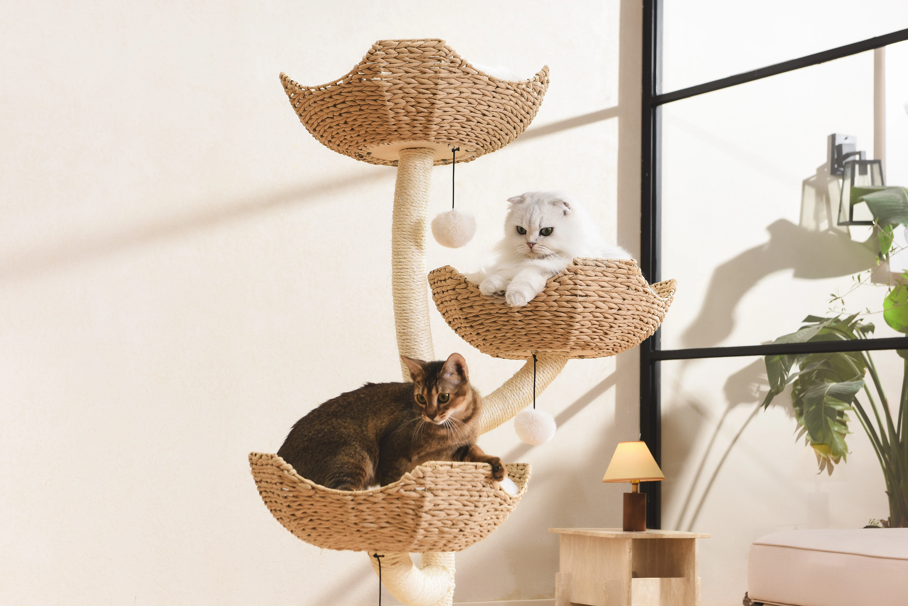

Setting up a "cat-friendly" home is about more than just a litter box. At PurrPets, we focus on enrichment and comfort to keep your feline hunter happy.

Before you bring home your new master, ensure you have these four essentials ready:
| Item Type | The "PurrPets" Choice | Why It Matters |
|---|---|---|
| Litter Box | Large, open-top bin. | Prevents odors from being trapped and gives the cat space to move. |
| Scratching Post | Tall sisal or cardboard ramp. | Saves your sofa! Cats need to shed their outer claw sheaths. |
| Vertical Space | Multi-level Cat Tree. | Allows cats to survey their kingdom from a safe height. |
| Carriers | Hard-shell or top-loading. | Ensures safety during vet trips or emergency travel. |
Don't let your cat get bored! Every cat should have a mix of these toy types:
If your cat "scarfs and barfs" (eats too fast and throws up), a Slow Feeder Bowl is the best gear investment you can make. It forces them to "hunt" for their kibble one piece at a time.